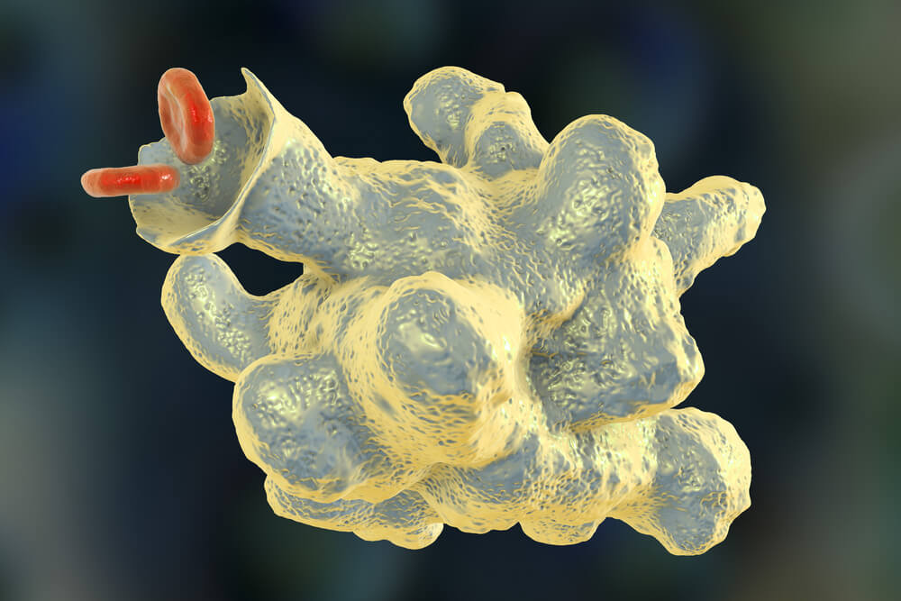
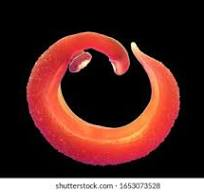
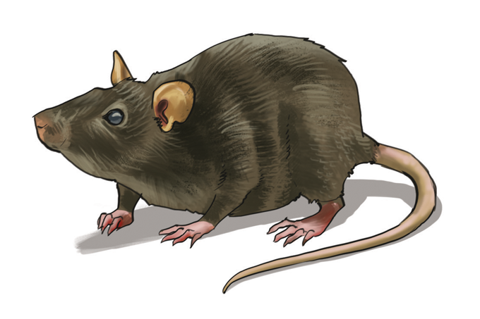

Veja as principais doenças:

Nenhum resultado

Amebíase
A amebíase é mais comum em regiões onde as condições de saneamento básico são precárias, uma vez que a forma de contaminação se dá via ingestão de seus cistos
Clique para ver mais sobre
Cólera
De acordo com relatos bem antigos, a cólera estava presente desde os primeiros séculos da humanidade, causando diarreias agudas de aspecto semelhante à água de arroz, vômitos e, em casos mais acentuados, câimbras, perda de peso intensa e olhos turvos
Clique para ver mais sobre

Esquistossomose
Esquistossomose é uma doença parasitária causada por um platelminto. A doença é também conhecida como doença do caramujo, xistose e barriga d’água.
Clique para ver mais sobre

Leptospirose
Leptospirose é uma doença transmitida principalmente pela urina de animais infectados, como roedores, e pode ser contraída pelo contato com água ou com solo contaminados.
Clique para ver mais sobre
Ascaridíase
A ascaridíase é o resultado da infestação do helminto Ascaris lumbricoides no organismo, sendo mais frequentemente encontrado no intestino
Clique para ver mais sobre